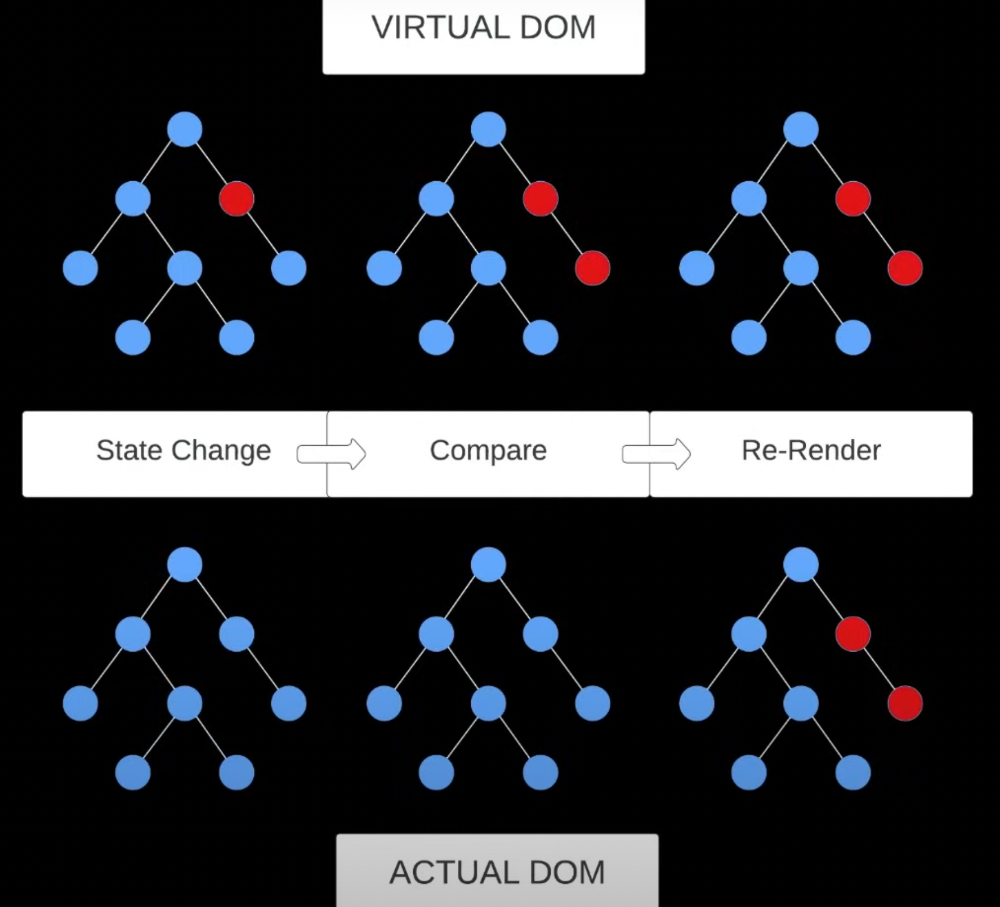

React Crash Course Part 1/3
javascript
react
Lesson 1
What is react?
- JS library for building user interfaces.
- Websites/UIs are looked at in terms of components.
- React is a UI library, not a framework to be specific.
- A framework provides complete solution eg Angular – provides route, http client, state management library and much more.
- React is often referred to as a framework because it operates like one, and is in direct competition with frameworks like angular.
- React is the most popular out of the major front-end frameworks (react, vue,js, angular, spelt).
- Often used with other libraries eg react router to create a full featured solution.
- The ecosystem of react is huge so it can be used for a wide variety of applications such as single page apps, server side rendered applications and static websites.
Lesson 2
Why react?
- Back in the days, the web is pretty static, you would click on a link, then it will take you to another page, then another page would be refreshed. Then came along Ajex, this allows is to get data from the server without having to refresh the page and this is a game-changer in terms of user interfaces.
- This allows us to build single page applications where we can build very dynamic user experience.
- As this type of application and interface grows, it becomes very hard to maintain – this is where react and front-end frameworks come in – it allows us to build dynamic UI that is easy to maintain and scale.
- React uses virtual DOM (Document Object Model) – a lightweight copy of the actual DOM. When the state of a component changes, the virtual DOM changes first, then react will compare the 2 (the virtual DOM and the actual DOM) and it will update the parts that needed to be updated. 
Components
- Core concept of any frontend framework
- Reusable piece of code that can be used to build components on a page. Can be thought of as custom HTML elements.
- Components can be broken down into smaller ones - called composition. This is a great way to built UI because it allow you to break down complex interfaces into smaller more managable pieces – makes your code easy to maintain and scale.
- Components can be either classes (older way) or functions.
- Components can take in props – this is like arguments or attributes.
- Components can hold their own state or their own data.
- The output of a component is a JSX (Javascript Syntax Extension) – this is HTML-like syntax within Javascript. This is what gets returned from a react component.

State
- State represents data that a component manages internally.
- Allows component to store and manage their own data which can change over time – will change based on user interaction or other factors.
- State is typically used for data that is expected to change - eg user input, to fetch data from API, or UI related data like whether a model is open or closed.
- To define state in a functional component, you can use a hook.
- Global state – relates to the app as a whole, and not just a single component. Eg data that you fetch from your database, you probably want to share this will multiple components.
- We can also use 3rd party state management system like Redux.
Hooks
- Functions that enable functional components to use state and other react features without writing a class.
- React components used to be classes and these classes has life cycle methods - methods that ran at specific time during the component rendering process.
- Functional components don’t have life cycle methods because they are not class – and hooks allows us to do the same stuff we could do within class components such as set state etc.
- Two main hooks we need to know right now are: useState, useEffect.
- All hooks starts with the word
use. - We can also create custom hooks to use within our own components.
SPA, SSR, SSG
- Single Page App
- Load a single HTML file and JavaScript loads the entire UI including routes.
- This is what this framework was initially built for.
- Allows our interface to be very interactive.
- When we click a link, it doesn’t load that page, but the Javascript is loading that page for you.
- Good for fast, dynamic interfaces but can have some issues when it come to initial page load time, and SEO because the content comes from Javascript. The solution for this is to create a server side rendered app whcih you can do with a framework like next.js or remix.
- These frameworks they still use react – you can think of it like a wrapper around react. But instead of everything being bundled in the Javascript, the initial page load is rendered on a server so it is good for SEO and good for the initial page load time.
- You can deploy to any type of host.
- Server-Side Rendered
- Server sends fully rendered page to client. You can fetch data and load it as well.
- This is more difficult to deploy because you need a server. Typically would use something like versel, netlify.
- Static Site Generation
- Frameworks generates static HTML files at build time. These are very fast.
- Eg frameworks like Gatsby, Astro (these frameworks also use react)
Vite
- Vite is a super fast frontend toolkit that can be used for all kinds of JS projects including React.
- It is build on top of ESBuild, which is a very fast JS bundler.
- Has built-in development server with hot-reload.